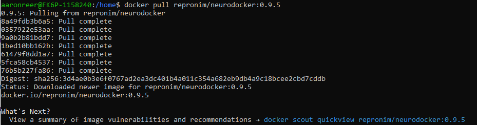
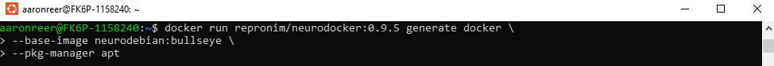
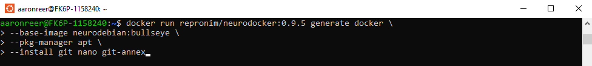
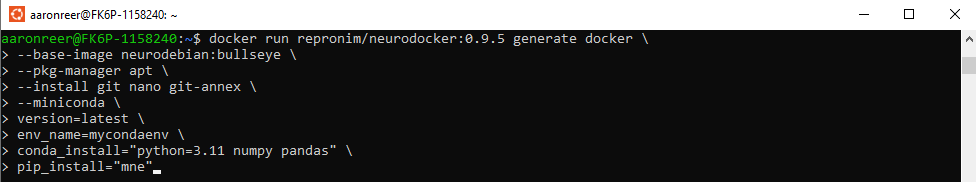
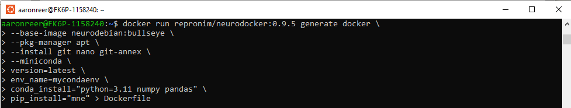

Creating software containers#
Learning objectives#
basic docker management
docker commands
resource management
Requirements#
a working version of Docker
a Docker Hub and GitHub account
access to a Unix terminal/shell
minimal understanding of BASH, i.e. primarily the
pwd,lsandcdcommands. (Check the refresher section link to catch up!)
Docker - there and back again#
So far, we (hopefully) got to know how docker works, how containers can be downloaded, used and managed. Next, we’ll learn how to create docker containers for our own work, including all the necessary dependencies to make your workflow truly reproducible.
Docker containers - the creation#
When it comes to creating docker containers, two essential parts are relevant:
a Dockerfile
the
docker buildcommand
Dockerfiles#
At the beginning there was a Dockerfile…
A Dockerfile is, in essence, a machine-readable instruction on how to build a docker container. It can be considered the source code of a docker image.
The Dockerfile usually includes a mixture of bash commands, that you would also normally use on your machine to e.g. setup a Conda enviornment or to install specific software, and docker specific commands (called instructions). Below you’ll find a list of acceptable Docker instructions are, if the terminology is condusing or you want to dive deeper into what the different commands are and how they are used check out the Docker build documentation. We’ll only make use of a few relevant commands for this tutorial that we will explain in detail below.
Instruction
ADD - Add local or remote files and directories.
ARG - Use build-time variables.
CMD - Specify default commands.
COPY - Copy files and directories.
ENTRYPOINT - Specify default executable.
ENV - Set environment variables.
EXPOSE - Describe which ports your application is listening on, i.e. for interactions with the users filesystem.
FROM - Create a new build stage from a base image.
HEALTHCHECK - Check a container's health on startup.
LABEL - Add metadata to an image.
MAINTAINER - Specify the author of an image.
ONBUILD - Specify instructions for when the image is used in a build.
RUN - Execute build commands.
USER Set user and group ID.
VOLUME Create volume mounts.
WORKDIR Change working directory.
Building a Dockerfile#
The following will be a step-by-step guide on how to create a Dockerfile and how to populate our file with the necessary instructions to build a Docker container. Each separate instruction is called a “layer”. Layers are executed consecutively from to to bottom, when using the build command to compose an Docker Image.
We will be relying on the command line and bash from here on out, if this seems like gibberish to you, please go through the course prerequisites - Introduction to the (unix) command line: bash.
Let’s create a new directory on our desktops called my_first_docker and in it an empty textfile called Dockerfile. Open your shell, type the following and hit enter
mkdir ~/Desktop/my_first_docker && touch ~/Desktop/my_first_docker/Dockerfile
Open your Dockerfile either with a text-editor of your choice (again VScode is recommended)
FROM
the “From” command defines the OS architecture that your image is supposed to use, e.g. Ubuntu 20.04. This will be referred to as the “base” or “baseimage” of a container. At times we will also use the ‘From’ command to call specific packages or environment managers, such as Conda. In this, case a specific OS will be defined in the respective image that the ‘from’ command points to, e.g when calling ‘FROM continuumio/miniconda3’, the minconda3 image will have a specific OS defined.
It is also possible to use the ‘From’ command to chain multiple Docker images or more complex building steps together, for our purposes this is rarely necessary. You can find more info on Multi-stage builds here.
Entrypoint and CMD
To make a docker image executable you’ll need to include either an ‘ENTRYPOINT’, an ‘CMD’ or a mixture of both instructions. These specify what should happen when a container starts, and what arguments can be passed to modify the behaviour of the container.
The ENTRYPOINT specifies a command that will always be executed when the container starts, while CMD defines the default arguments of the container, e.g.
ENTRYPOINT ["echo", "Hello, World!"] or 'CMD ["echo", "Hello, World!"]'
Given no further arguments when the container is run (after we’ve build it, of course), both of these will simply print “Hello World!”, but the behavior of the ‘CMD’ command can be overriden when the container is run with specific instruction, e.g. ‘docker run myimage Hello, Docker!’ prints “Hello, Docker!” instead of “Hello World!”.
A practical use case can be to combine bothe instructions, so that the entrypoint provides a command that is always exectued, while CMD provides arguments that the user might want to exchange, e.g. if we want our container to execute a python script, we simply provide command line argument “python” as our ENTRYPOINT and use CMD to specify a default name of the script.
‘’’ FROM python:3.10 ENTRYPOINT [“python”] CMD [”script.py”] ‘’’ If we now simply run this conatiner using ‘docker run myimage’ it will try to locate and execute “script.py”, if the user instead wants to run his python script called “my_script.py”, he can simply add this info to the run instruction, i.e. ‘docker run myimage “my_script.py”’.
Set Installations instruction
In the installation instructions, we want to provide information on what software/packages we want to install to run our workflow. Using the Ubuntu baseimage we can make use of the standard package managers ‘pip’ and ‘apt-get’ in the same way we would use them in our bash shell.
Modify for our example
what programms etc.
Copy relevant files
Docker build
Now that we’ve composed our Dockerfile, we can build our image via the ‘docker build’ command in the terminal.
For this we provide a name for our image via the
-t flagand specify the path to our Dockerfile, resulting in e.g.:`docker build -t myfirstdocker ~/Desktop/my_first_docker`Output
As you can see from the output, the steps we defined in our Dockerfile are executed step by step, comparable to docker pull. And we can check if our image was actually created successfully by using the docker images command:
```
Output
```
Run the file including mount path
Virtualizing a workflow#
More complex example of a docker container
e.g. create eviornment via conda with specific packages, provide input and output path, do a simple task (e.g. mne report, create BIDS folder structure etc.)
Neurodocker?#
You might wonder: Isn’t there a sufficient, faster and easier way of composing Dockerfiles?
Well, say no more and meet Neurodocker, a Docker container that targets the creation of Docker containers - Dockerception.
Even though Neurodocker was designed for (you might’ve guessed it already) Docker containers to utilize in the realm of neuroscience, it’s also a very handy tool for any other research field, as especially the basic setup is done very quickly and hassle-free.
So, let’s see how we can create our Dockerfiles using Neurodocker. At first we have to get the Neurodocker image using the docker pull command

all we have to do now is run Neurodocker, providing the necessay input arguments beginning with stating that we want to create a Docker container and that we want to use neurodebian:bullseye as a base and apt as package manager:

Next, we specify all the Linux packages that we want to have installed in our image:

Now, we are only missing the python part…

Great! We have all the information that we need. Hence, let’s run the Neurodocker container parsing the output to a file called ‘Dockerfile’. We can do so using the >-operator :

So using Neurodocker can save you a lot of time and stress. It’s especially great to set up the basics of your Docker container, so one approach to create a Docker container for your workflow may be to do the basics with Neurodocker and fine-tune to your needs manually.
Docker push#
Now this is where we could stop if we just want to make a quick reproducible solution for our basic workflows. But we, of course, want to additionally enable open and community-driven science, by getting our containerized workflows out there, but how do we do that?
In general, we can simply share our Dockerfile or created image (use the export/import functionality - Docker save/load) via e.g. USB or email. But our preferred solution should be to make use of this thing called “internet” and share our Docker container on Docker Hub, making it available to everyone. Just make sure that nothing sensitive is contained in your container.
This is again rather straightforward and can be achieved in a few simple steps.
Create and login to your Docker Hub account
Before you can push an image, you need to log in to Docker Hub. Simply create an account online, run
docker loginfrom your command line and enter your Docker Hub username and password.Tag your image After building our image, we need to
tagit, in order to make it identifiable online. Tags can be anything, but should be meaningful file and version names (1.0 etc. or “latest” are common). The general form of the tag command is e.g.docker tag image-id username/repository:tag
Where
image-idis the name provided when building your image,usernameis your Docker Hub username,repositoryis the repository or folder on your Docker Hub where your container is supposed to be stored andtagis of course the specific version name. So this could look likedocker tag myworkflowimage mernst/workflow:latest
Docker push Next we simply use the
docker pushcommand to send our freshly tagged Docker container to Docker Hub, e.g.docker push yourhubusername/container:tag
OUTPUT
Automating builds using Github#
!Important: It seems to me that you nowadays need a paid Dockerhub subscription of you want to make use of the automated builds (hence we might want to exclude them here)
there’s an even easier way to integrate Docker in reproducible, in terms of version-controlled, scientific practice.
We’ll make use of the integrated automatic build function of Docker, which builds and pushes your Docker container directly and automatically from a GitHub repository every time a pull request is processed.
The respective process is highly customizable so let’s walk through an example.
Set up The setup is simple and straightforward, as we just need to create a new GitHub repository in which we store our Dockerfile:
create a new Github repository called docker_workshop
upload your Dockerfile to this repository
Specify the automated build process
On Docker Hub, go to the Docker container we’ve uploaded in the previous step and within that, click on builds
```
img
```
Next, click on Configure automated builds. We’re now asked to indicate the source repository on GitHub and indicate some build rules, including automated tests, branch to build from, tag that should be applied, etc.
```
img
```
Now, after clicking on save and build, our Docker container will be build automatically from our corresponding GitHub repository. Depending on the size of your Docker container and the current traffic on Docker Hub, it might take a while
Every consecutive push or commit to this GitHub repository will now trigger a new build, hence your Docker container remains nicely up to date without any additional effort.
Docker containers - creating and pushing - a recap#
Creating and sharing Docker containers is achieved through three parts: a
Dockerfile, thebuildand thepushcommand.Dockerfiles can either be created completely manually or supported by neurodocker
using docker build, the Docker container is created following the information in the Dockerfile
docker build -t myfirstdocker path/to/directory/containing/Dockerfile
once build, the Docker container should be tagged and subsequently pushed to Docker Hub
docker tag image-id yourhubusername/container:tag docker push yourhubusername/container:tag
the build and push process can be automatized using a combination of Docker Hub and GitHub
Excercise#
???
as this is an interactive session might not be necessary, but for the general audience we could have them go to the whole process for a simple python project?